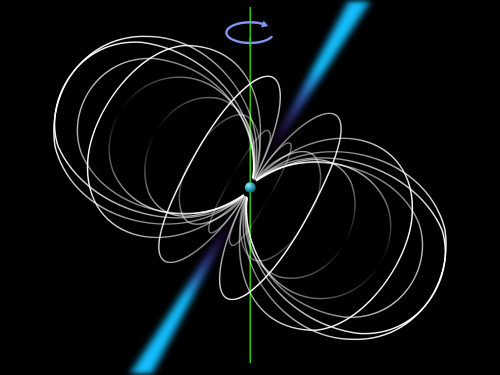
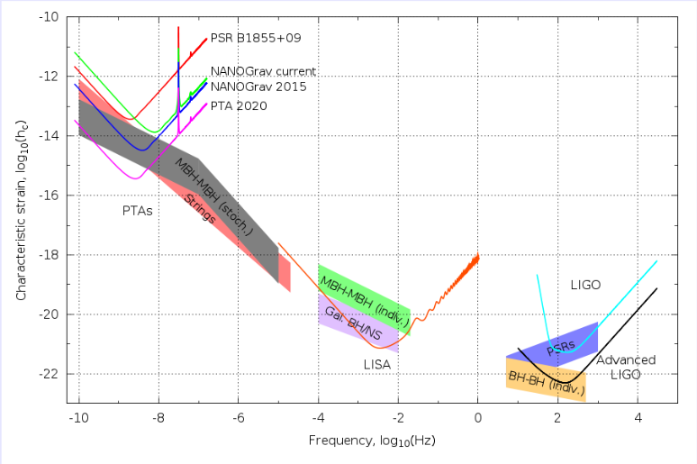

Who are we?
We are a diverse group of astronomers, physicists, and engineers and include senior scientists, postdoctoral fellows, and graduate and undergraduate students.
-

NANOGrav members gather for a group photo at our Fall 2012 meeting at Oberlin College.
Why study gravitational waves?
Gravitational wave astronomy is at the cutting edge of modern science and is about to open a whole new window on our Universe.

How does NANOGrav work?
We use exotic objects called pulsars to create a "cosmic global positioning system".
-

Image Credit: Oona Räisänen, based on work by Roy Smits
Throughout human history, all the information we have received from outside our own solar system has come in the form of electromagnetic waves (light, radio, X-rays, etc.). Gravitational wave astronomy will give us an entirely new spectrum with which to observe the universe. The gravitational wave regime probed by pulsar timing (nanohertz) is complementary to those probed by ground detectors such as LIGO (kilohertz) and by proposed space missions (millihertz). The separation in frequency between these instruments is the comparable to the separation between radio, optical, and gamma rays in the electromagnetic spectrum. Each technique for detecting gravitational waves promises exciting, unique science.
-

Upcoming Events
- 10/21/2013 - 10/23/2013
- All NANOGrav meeting at Franklin & Marshall
NSF-AST Portfolio Review Response
Gravitational waves (GWs) are ripples in space-time that are known to exist but have not yet been detected directly. Once they are, a key feature of any viable theory of gravity will be demonstrated and a new window on the universe opened. GW astronomy was named as one of five key discovery areas in the "New Worlds and New Horizons" Decadal Report. Pulsar timing probes GW frequencies, and hence source classes, that are inaccessible to any other detection method and can uniquely constrain the nonlinear nature of General Relativity. Pulsar timing is therefore a critical capability with its own discovery space and potential. Fulfilling this capability requires the complementary enabling features of both the Green Bank Telescope (GBT) and the Arecibo Observatory.